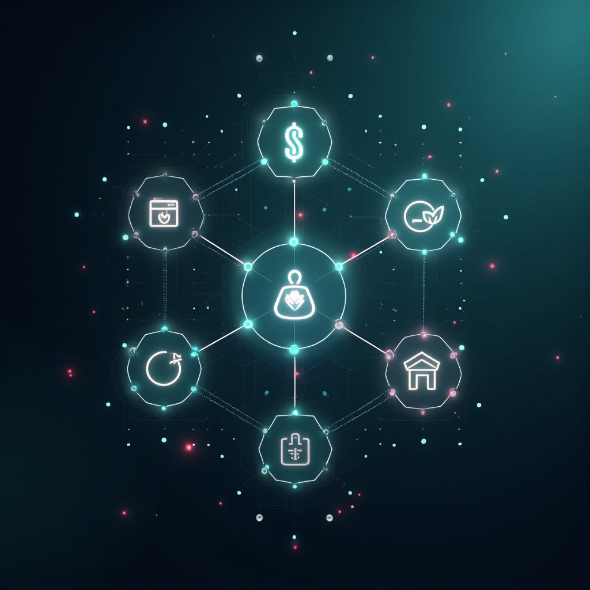
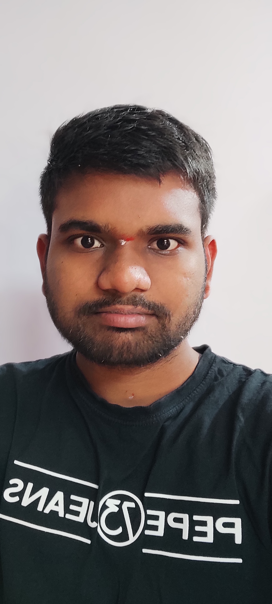

Discover the driving force behind Setica – our mission, vision, and commitment to open-source innovation.
To empower individuals by simplifying digital complexity through a unified, intuitive, and open-source platform that seamlessly integrates the essential tools for modern life.
To foster a global community building and benefiting from ethical, user-centric technology that enhances human connection, productivity, and well-being, free from data exploitation.

Conceptualizing the Setica Ecosystem
Setica is more than just software; it's an ambitious open-source ecosystem designed to tackle the fragmentation and complexity of our digital lives. We believe technology should serve people, adapting to their needs, not the other way around.
By combining cutting-edge interaction design with robust engineering, we're building a unified platform where disparate digital tools converge into a seamless, intuitive experience. Our goal is to reduce friction and empower users to focus on what truly matters.
Built collaboratively with transparency. Open source isn't just code; it's our philosophy.
Connecting the dots between digital tools and daily tasks for effortless workflows.
Prioritizing intuitive interfaces and meaningful interactions that genuinely simplify.
Committed to ethical practices and respecting user privacy by design.
Setica is currently driven by an individual passion for creating better, more integrated technology.

Hi, I'm Vamshi. As an indie developer fascinated by the potential of technology to improve our lives, I started Setica to address the digital clutter and disjointed experiences I saw everywhere. My goal is to build tools that feel less like applications and more like natural extensions of our intentions.
Setica is born from the belief that complexity can be elegant, and that open collaboration leads to stronger, more ethical solutions. While currently an indie project, the vision is much larger – a thriving ecosystem built with and for the community.
I'm excited about the future and the innovative products planned under the Setica umbrella. Let's build something amazing together.
Follow the project's progress, contribute ideas, or join the waitlist to be notified about upcoming launches.
JOIN WAITLIST → View on GitHub